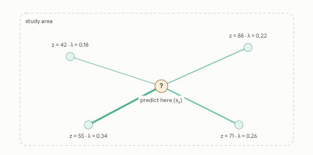
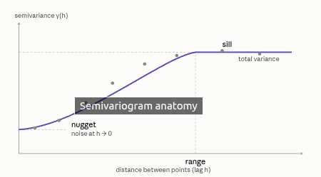

Welcome to this hands-on guide for performing geostatistical analysis with Python’s library PyGStat! Geostatistics is a powerful branch of statistics that focuses on analyzing and making predictions about spatially correlated data. It’s widely used in fields like environmental science, natural resource management, agriculture, epidemiology, and geology—where understanding how things change across space is essential.
In this tutorial, we’ll learn how to use Python tools to: - Explore spatial datasets - Visualize spatial patterns - Quantify how spatial similarity fades with distance (variograms) - Predict values at unsampled locations with kriging
We’ll walk step-by-step through the core concepts, equations, and practical recipes, using real datasets. You’ll not only see the math but also get a sense for when and why geostatistical tools work—and how to interpret the results.
By the end, you’ll be able to: - Prepare and visualize spatial data for analysis - Build and interpret variograms - Apply kriging to interpolate unknown values across space, along with their uncertainties
Let’s get started on your journey to spatial data mastery!
Kriging
Kriging is a way to guess the value of something at a place you didn’t measure, using the places you did. Soil lead, rainfall, disease rate, elevation, anything that varies smoothly over space. What makes it special is that it doesn’t just average nearby points; it works out the smartest possible weighted average by first learning how your variable’s similarity decays with distance, and it hands you an uncertainty estimate for free.
Everything rests on one idea (Tobler’s first law): near things are more alike than distant things. Kriging’s whole job is to measure exactly how fast alikeness fades with distance, then use that to weight the neighbors.
Step 1: the estimator is just a weighted average
To predict the value at an unsampled spot \(s_0\), you take a weighted sum of your \(n\) measurements:
\[\hat{Z}(s_0) = \sum_{i=1}^{n} \lambda_i \, Z(s_i)\]
The whole game is choosing the weights \(\lambda_i\). Two rules govern them: closer and better-connected points get more weight, and (for ordinary kriging) the weights must sum to 1, i.e. \(\sum \lambda_i = 1\), so the prediction is unbiased — no systematic over- or under-shooting.

The closest point (λ = 0.34) pulls the hardest; the farthest contributes least; the four weights sum to 1. But notice we haven’t said where those numbers come from yet. That’s the heart of kriging.
Step 2: the variogram is the engine
Before computing any weight, kriging measures how your variable’s similarity decays with distance. The tool for this is the semivariogram. For every pair of points separated by distance \(h\), compute half the squared difference of their values, then average over all pairs at that distance:
\[\gamma(h) = \frac{1}{2N(h)} \sum_{(i,j)} \big(Z(s_i) - Z(s_j)\big)^2\]
Small \(h\) (nearby points) → small \(\gamma\) (very alike). Large \(h\) → larger \(\gamma\) (less alike), until it flattens out. Plotting \(\gamma\) against \(h\) gives the curve every kriging model is built on:The gray dots are your raw data (the empirical variogram); the purple line is a smooth model fitted through them (spherical, exponential, Gaussian, etc.).

Three numbers define it:
- Nugget: where the curve meets the y-axis. In theory two points at zero distance should be identical (γ = 0), so any gap here is measurement noise or variation finer than your sampling.
- Sill: the plateau. Beyond this, points are so far apart they’re effectively unrelated; it equals the overall variance of the data.
- Range: the distance at which the curve reaches the sill. Inside the range, points inform each other; past it, they don’t. This is literally “how far does the neighborhood extend.”
Step 3: solve for the weights
Now the payoff. Kriging picks the weights that minimize the prediction error variance subject to the unbiasedness constraint. Solving that constrained optimization (via a Lagrange multiplier \(\mu\)) gives a tidy linear system — one equation per sample point, plus one for the constraint:
\[\sum_{j=1}^{n} \lambda_j \, \gamma(s_i, s_j) + \mu = \gamma(s_i, s_0), \qquad \sum_{j=1}^{n}\lambda_j = 1\]
In matrix form it’s just \(\mathbf{A}\boldsymbol{\lambda} = \mathbf{b}\), which you invert to get the weights:
\[ \underbrace{\begin{bmatrix} \gamma_{11} & \cdots & \gamma_{1n} & 1 \\ \vdots & \ddots & \vdots & \vdots \\ \gamma_{n1} & \cdots & \gamma_{nn} & 1 \\ 1 & \cdots & 1 & 0 \end{bmatrix}}_{\text{how samples relate to each other}} \begin{bmatrix} \lambda_1 \\ \vdots \\ \lambda_n \\ \mu \end{bmatrix} = \underbrace{\begin{bmatrix} \gamma(s_1,s_0) \\ \vdots \\ \gamma(s_n,s_0) \\ 1 \end{bmatrix}}_{\text{samples vs. target}} \]
The left matrix \(\mathbf{A}\) contains the variogram value between every pair of samples — this is what lets kriging de-cluster: two samples sitting on top of each other are near-redundant, and the matrix automatically splits their weight instead of double-counting them. The right vector \(\mathbf{b}\) contains the variogram value between each sample and the target location — this is what makes closer, better-connected points get more weight. Every \(\gamma\) in there is read straight off the fitted curve from Step 2.
Uncertainty map
Because kriging minimized error variance, it can also report that minimized variance at every point:
\[\sigma_k^2(s_0) = \boldsymbol{\lambda}^\top \mathbf{b} = \sum_{i=1}^{n} \lambda_i\,\gamma(s_i, s_0) + \mu\]
This is why kriging beats simple inverse-distance weighting: alongside the prediction map, you get a kriging variance map showing where predictions are trustworthy (dense sampling, low variance) and where they’re shaky (sparse areas, high variance), invaluable for deciding where to sample next.
Types of Variogram
A variogram describes how the similarity between sample points changes as the distance between them increases. It’s a plot (and mathematical function) that summarizes spatial correlation as distance grows, letting you see how much nearby values “know” about each other versus faraway ones. There are different types of variogram models: some flatten out beyond a certain distance (“bounded” types), while others keep rising (“unbounded” types). The shape you choose (spherical, exponential, Gaussian, etc.) controls how interpolation works, especially how smooth or sensitive your spatial predictions will be.
The experimental or empirical variogram is the cloud of points you compute directly from your data,
\[\hat\gamma(h)=\frac{1}{2N(h)}\sum(Z(s_i)-Z(s_j))^2\]
The theoretical (model) variogram, the smooth authorized function you fit through those points and actually feed to kriging and those split cleanly into bounded models (they flatten out at a sill) and unbounded ones (they rise forever, for data with a trend). Here’s how the common shapes compare with the same sill and range: The single most important thing to read off that plot is the behavior near the origin, because it dictates how smooth the resulting surface is: Gaussian leaves the origin flat (parabolic) → very smooth fields; spherical and exponential leave linearly → continuous but rougher; the power/linear model just keeps climbing → no sill at all.
Throughout, I’ll use \(c_0\) = nugget, \(c\) = partial sill, \(a\) = range, so total sill \(= c_0 + c\).
Bounded models (reach a sill)
These are for second-order stationary data — variance settles down at large distances.
Pure nugget: no spatial structure at all; \(\gamma(h)=c_0\) for \(h>0\) and \(0\) at \(h=0\). This is white noise; kriging with it just returns the global mean. Useful as a diagnostic (if your empirical variogram looks like this, there’s no correlation to exploit at your sampling scale).
Spherical: the workhorse in mining and soil science: \[\gamma(h)=c_0+c\left[\tfrac{3}{2}\tfrac{h}{a}-\tfrac{1}{2}\left(\tfrac{h}{a}\right)^3\right]\ \text{for } h\le a,\quad =c_0+c \text{ for } h>a\] It reaches the sill exactly at the range \(a\) — a genuine “correlation stops here” distance, which is why it’s intuitive.
Exponential: rises fast then approaches the sill asymptotically: \[\gamma(h)=c_0+c\left[1-\exp\!\left(-\tfrac{h}{a}\right)\right]\] It never quite reaches the sill, so people quote a practical range of \(\approx 3a\) (95% of the sill). Good for phenomena with abrupt local variation. It’s also the Ornstein–Uhlenbeck / Markov correlation, so it shows up a lot in environmental data.
Gaussian: parabolic at the origin → extremely smooth interpolation: \[\gamma(h)=c_0+c\left[1-\exp\!\left(-\tfrac{h^2}{a^2}\right)\right]\] Practical range \(\approx a\sqrt{3}\). Beware: with a zero or tiny nugget it makes the kriging matrix nearly singular and produces unrealistic overshoots — always pair it with a small nugget.
Matérn: the general parent of the family, with an extra smoothness parameter \(\nu\): \[\gamma(h)=c_0+c\left[1-\tfrac{1}{2^{\nu-1}\Gamma(\nu)}\left(\tfrac{h}{a}\right)^{\nu}K_\nu\!\left(\tfrac{h}{a}\right)\right]\] where \(K_\nu\) is the modified Bessel function. It contains the others as special cases: \(\nu=0.5\) gives exponential, \(\nu\to\infty\) gives Gaussian. Instead of guessing which shape fits, you let the data estimate \(\nu\). This is the modern default in spatial statistics (e.g. gstat, fields, most Gaussian-process libraries).
Also in this bucket, less common: circular, cubic, and pentaspherical — alternative bounded shapes that differ mainly in near-origin curvature; you’ll rarely need them over the four above plus Matérn.
Unbounded models (no sill)
These describe data with a trend or fractal-like behavior — variance keeps growing with distance, so the process isn’t stationary in the mean.
Power: \(\gamma(h)=c_0+b\,h^{\omega}\) with \(0<\omega<2\). The exponent controls roughness; \(\omega\to 2\) is smooth, small \(\omega\) is rough. Linear is just the \(\omega=1\) special case, \(\gamma(h)=c_0+bh\). The logarithmic (De Wijsian) model, \(\gamma(h)=c_0+b\ln(h)\), is the classic mining variant (only valid for regularized/block support, not as a point model). Unbounded variograms go with universal kriging or intrinsic kriging, where a trend is modeled separately.
Special-purpose
Hole-effect — a damped oscillation for periodic or cyclic phenomena (repeating ore bands, seasonal spatial patterns): \[\gamma(h)=c_0+c\left[1-\tfrac{\sin(h/a)}{h/a}\right]\] The dip below and rise above the sill encode negative-then-positive correlation at regular spacings.
Beyond the single univariate curve
The word “variogram” also extends in two directions that are genuinely different types, not just different shapes:
By direction: an omnidirectional variogram pools all point pairs regardless of orientation, while directional variograms compute \(\gamma\) within angular bands to detect anisotropy. If the range differs by direction (correlation reaches farther N–S than E–W) that’s geometric anisotropy; if the sill differs, it’s zonal anisotropy. This is often where the real modeling effort goes.
By what’s being correlated, the cross-variogram measures joint spatial covariation between two variables and is the engine of co-kriging; the indicator variogram is computed on a 0/1 threshold indicator of the variable and drives indicator kriging (for non-Gaussian data or probability mapping). There are also robust alternatives to the classic estimator — the madogram (uses \(|Z_i-Z_j|\) instead of squared differences) and rodogram (square-root differences) — which resist outliers, plus relative variograms (general and pairwise) for data whose variability scales with the local mean.
One expert caveat that ties it all together: you can’t fit any curve you like. A valid model must be conditionally negative definite so the kriging system stays solvable and variances stay non-negative — that’s exactly why this short, blessed list of “authorized” models exists, and why nested combinations (a nugget plus a spherical plus another structure) are built by adding authorized models rather than inventing new ones.
If it’d be useful, I can add a model picker to the workbench — swapping in Matérn (with a \(\nu\) slider) and a directional/anisotropy toggle would let you see these differences on a live surface rather than just the curve.
It measure how similarity fades with distance (the variogram), then solve a small linear system that turns that decay curve into optimal, de-clustered, unbiased weights for a weighted average — and get a built-in uncertainty estimate as a bonus.
Types Kriging
Kriging is a family of geostatistical interpolation algorithms used to predict values at unsampled locations based on observed data. At its core, kriging is a Best Linear Unbiased Predictor (BLUP).
The differences between the types of kriging lie in their assumptions about the mean (trend) of the spatial process and the resulting mathematical constraints used to solve for the weights \(\lambda_i\).
1. Simple Kriging (SK)
Assumption: The global mean of the spatial process is known and constant. (This is rare in practice but mathematically the simplest). Model: \(Z(x) = \mu + \epsilon(x)\), where \(\mu\) is a known constant and \(E[\epsilon(x)] = 0\).
Predictor: \[ \hat{Z}_{SK}(x_0) = \mu + \sum_{i=1}^n \lambda_i [Z(x_i) - \mu] \]
Mathematics & Optimization: Because the mean is known, the predictor is inherently unbiased without restricting the sum of the weights. The goal is to minimize the estimation variance \(\sigma_{SK}^2 = E[(\hat{Z}_{SK}(x_0) - Z(x_0))^2]\).
Taking the derivative with respect to \(\lambda_i\) and setting it to zero yields the Simple Kriging System: \[ \sum_{j=1}^n \lambda_j C(x_i, x_j) = C(x_i, x_0) \quad \text{for } i = 1, \dots, n \]
In matrix form: \[ \mathbf{C} \boldsymbol{\lambda} = \mathbf{c}_0 \] * \(\mathbf{C}\) is the \(n \times n\) covariance matrix between data points: \(C_{ij} = C(x_i, x_j)\). * \(\mathbf{c}_0\) is the \(n \times 1\) covariance vector between data points and the prediction location: \(c_{0i} = C(x_i, x_0)\). * \(\boldsymbol{\lambda}\) is the vector of weights.
2. Ordinary Kriging (OK)
Assumption: The global mean is unknown but constant (intrinsic stationarity). This is the most commonly used form of kriging. Model: \(Z(x) = \mu + \epsilon(x)\), where \(\mu\) is an unknown constant.
Predictor: \[ \hat{Z}_{OK}(x_0) = \sum_{i=1}^n \lambda_i Z(x_i) \]
Mathematics & Optimization: To ensure the predictor is unbiased (\(E[\hat{Z}_{OK}(x_0)] = \mu\)), the weights must sum to 1: \[ \sum_{i=1}^n \lambda_i = 1 \]
We minimize the variance \(\sigma_{OK}^2\) subject to this constraint using a Lagrange multiplier (\(\psi\)). The Lagrangian is: \[ \mathcal{L} = \sigma_{OK}^2 - 2\psi \left( \sum_{i=1}^n \lambda_i - 1 \right) \]
Taking derivatives and setting to zero yields the Ordinary Kriging System. It is traditionally written using the variogram \(\gamma(h)\) rather than covariance: \[ \sum_{j=1}^n \lambda_j \gamma(x_i, x_j) - \psi = \gamma(x_i, x_0) \quad \text{for } i = 1, \dots, n \] \[ \sum_{i=1}^n \lambda_i = 1 \]
In matrix form: \[ \begin{bmatrix} \mathbf{\Gamma} & \mathbf{1} \\ \mathbf{1}^T & 0 \end{bmatrix} \begin{bmatrix} \boldsymbol{\lambda} \\ \psi \end{bmatrix} = \begin{bmatrix} \boldsymbol{\gamma}_0 \\ 1 \end{bmatrix} \] * \(\mathbf{\Gamma}\) is the \(n \times n\) variogram matrix between data points. * \(\boldsymbol{\gamma}_0\) is the \(n \times 1\) variogram vector to the prediction location. * \(\mathbf{1}\) is a column vector of ones. * \(\psi\) is the Lagrange multiplier (which also represents the minimized kriging variance when multiplied out).
3. Universal Kriging (UK) / Kriging with a Trend
Assumption: The mean is not constant, but is a deterministic function of the spatial coordinates (a trend or polynomial). Model: \(E[Z(x)] = m(x) = \sum_{k=0}^K a_k f_k(x)\), where \(f_k(x)\) are known basis functions (e.g., \(1, x, y, x^2, xy\)) and \(a_k\) are unknown coefficients.
Predictor: \[ \hat{Z}_{UK}(x_0) = \sum_{i=1}^n \lambda_i Z(x_i) \]
Mathematics & Optimization: For the predictor to be unbiased, the weights must perfectly reproduce the trend at the prediction location: \[ \sum_{i=1}^n \lambda_i f_k(x_i) = f_k(x_0) \quad \text{for } k = 0, \dots, K \]
This requires \(K+1\) Lagrange multipliers (\(\mu_k\)). The resulting Universal Kriging System is: \[ \sum_{j=1}^n \lambda_j C(x_i, x_j) + \sum_{k=0}^K \mu_k f_k(x_i) = C(x_i, x_0) \quad \text{for } i = 1, \dots, n \] \[ \sum_{i=1}^n \lambda_i f_k(x_i) = f_k(x_0) \quad \text{for } k = 0, \dots, K \]
In matrix form: \[ \begin{bmatrix} \mathbf{C} & \mathbf{F} \\ \mathbf{F}^T & \mathbf{0} \end{bmatrix} \begin{bmatrix} \boldsymbol{\lambda} \\ \boldsymbol{\mu} \end{bmatrix} = \begin{bmatrix} \mathbf{c}_0 \\ \mathbf{f}_0 \end{bmatrix} \] * \(\mathbf{F}\) is an \(n \times (K+1)\) matrix where \(F_{ik} = f_k(x_i)\). * \(\mathbf{f}_0\) is a \((K+1) \times 1\) vector where \(f_{0k} = f_k(x_0)\). * \(\boldsymbol{\mu}\) is the vector of Lagrange multipliers.
4. Co-Kriging (Multivariate Kriging)
Assumption: You are trying to predict a primary variable \(Z_1\), but you have secondary, cheaper-to-measure variables \(Z_2, \dots, Z_M\) that are spatially correlated with \(Z_1\).
Predictor: \[ \hat{Z}_1(x_0) = \sum_{m=1}^M \sum_{i=1}^{n_m} \lambda_{m,i} Z_m(x_{m,i}) \] (Where \(n_m\) is the number of samples for variable \(m\)).
Mathematics & Optimization: The optimization minimizes the variance of the prediction error for \(Z_1\), subject to unbiasedness constraints for each variable. The math is identical to Ordinary Kriging, but the covariance/variogram matrices are replaced by block matrices of cross-covariances.
For two variables (\(Z_1\) and \(Z_2\)), the matrix system looks like this: \[ \begin{bmatrix} \mathbf{C}_{11} & \mathbf{C}_{12} & \mathbf{1} & \mathbf{0} \\ \mathbf{C}_{21} & \mathbf{C}_{22} & \mathbf{0} & \mathbf{1} \\ \mathbf{1}^T & \mathbf{0}^T & 0 & 0 \\ \mathbf{0}^T & \mathbf{1}^T & 0 & 0 \end{bmatrix} \begin{bmatrix} \boldsymbol{\lambda}_1 \\ \boldsymbol{\lambda}_2 \\ \psi_1 \\ \psi_2 \end{bmatrix} = \begin{bmatrix} \mathbf{c}_{10} \\ \mathbf{c}_{20} \\ 1 \\ 1 \end{bmatrix} \] * \(\mathbf{C}_{11}\) is the auto-covariance of \(Z_1\). * \(\mathbf{C}_{12}\) is the cross-covariance between \(Z_1\) and \(Z_2\). * \(\boldsymbol{\lambda}_1\) and \(\boldsymbol{\lambda}_2\) are the weight vectors for the two variables.
5. Indicator Kriging (IK)
Assumption: Used for categorical data, or to estimate the probability that a variable exceeds a certain threshold \(z\) (e.g., probability of soil lead levels exceeding safety limits).
Mathematics: IK transforms the continuous variable \(Z(x)\) into a binary indicator variable \(I(x; z)\): \[ I(x; z) = \begin{cases} 1 & \text{if } Z(x) \le z \\ 0 & \text{if } Z(x) > z \end{cases} \]
The expected value of the indicator is the probability: \(E[I(x; z)] = P(Z(x) \le z)\).
IK is mathematically identical to Ordinary Kriging, but it is applied to the binary indicator variable \(I\) instead of the raw data \(Z\). \[ \hat{I}(x_0; z) = \sum_{i=1}^n \lambda_i I(x_i; z) \] The resulting prediction \(\hat{I}(x_0; z)\) is an estimate of the conditional probability \(P(Z(x_0) \le z | \text{data})\). By running IK across multiple thresholds \(z\), you can reconstruct the entire local probability distribution at \(x_0\).
6. Regression Kriging (RK) / Residual Kriging
The Problem it Solves: Universal Kriging (UK) models a spatial trend, but if you have a massive dataset (e.g., \(n > 10,000\)), solving the massive \((n+K+1) \times (n+K+1)\) matrix for UK becomes computationally impossible. The Solution: Regression Kriging splits the prediction into two distinct, computationally cheaper steps: modeling the deterministic trend using auxiliary covariates (Regression), and then modeling the spatially correlated leftovers (Kriging).
Assumption: The spatial process is composed of a deterministic mean driven by external covariates, plus a spatially autocorrelated stochastic residual. Model: \(Z(x) = m(x) + e(x) = \mathbf{X}(x)\boldsymbol{\beta} + e(x)\) * \(\mathbf{X}(x)\) is a vector of auxiliary covariates at location \(x\) (e.g., elevation, satellite imagery). * \(\boldsymbol{\beta}\) is a vector of regression coefficients. * \(e(x)\) is the spatially correlated residual with \(E[e(x)] = 0\).
Predictor: \[ \hat{Z}_{RK}(x_0) = \hat{m}(x_0) + \hat{e}(x_0) = \mathbf{X}(x_0)\hat{\boldsymbol{\beta}} + \sum_{i=1}^n \lambda_i \hat{e}(x_i) \]
Mathematics & Optimization (The Two-Step Process): Unlike Universal Kriging which solves for trend and spatial correlation simultaneously via Generalized Least Squares (GLS), Regression Kriging is typically implemented in two steps using Ordinary Least Squares (OLS):
Step 1: Global Regression Estimate the trend coefficients \(\boldsymbol{\beta}\) using OLS across all data points: \[ \hat{\boldsymbol{\beta}} = (\mathbf{X}^T \mathbf{X})^{-1} \mathbf{X}^T \mathbf{Z} \] Calculate the residuals at the sample locations: \[ \hat{e}(x_i) = Z(x_i) - \mathbf{X}(x_i)\hat{\boldsymbol{\beta}} \]
Step 2: Ordinary Kriging of Residuals Fit a variogram to the residuals \(\hat{e}(x_i)\) and apply standard Ordinary Kriging to predict the residual at the unsampled location: \[ \hat{e}(x_0) = \sum_{i=1}^n \lambda_i \hat{e}(x_i) \] (Where \(\lambda_i\) are solved using the standard OK matrix system shown in the previous response).
Note on Equivalence: If Step 1 uses Generalized Least Squares (GLS) instead of OLS—incorporating the spatial covariance matrix \(\mathbf{C}\)—Regression Kriging becomes mathematically identical to Universal Kriging. However, the OLS+OK two-step approach is heavily preferred in practice because inverting \(\mathbf{X}^T \mathbf{X}\) is vastly faster than inverting the spatial covariance matrix for large datasets.
7. Poisson Kriging (PK)
The Problem it Solves: Standard kriging assumes data is continuous and Gaussian. It fails for spatial count data (e.g., number of disease cases, crime incidents in a county). Count data follows a Poisson distribution, meaning the variance is tied to the mean. Furthermore, areas with small populations have highly unreliable rates (high variance), violating the assumption of homoscedasticity (constant variance). The Solution: Poisson Kriging smooths the observed rates by accounting for the population size, effectively filtering out the “Poisson noise” (random fluctuations due to small populations) to reveal the true underlying spatial risk.
Assumption: The observed counts \(Y(x_i)\) in area \(i\) follow a Poisson distribution. The underlying true relative risk \(\theta(x)\) is spatially correlated. Model: \[ Y(x_i) \sim \text{Poisson}(E_i \theta(x_i)) \] * \(E_i\) is the expected count (e.g., population at risk \(\times\) baseline disease rate). * \(\theta(x_i)\) is the true, unobserved relative risk. * The observed rate is \(Z(x_i) = Y(x_i) / E_i\).
Predictor: \[ \hat{\theta}_{PK}(x_0) = \sum_{i=1}^n \lambda_i Z(x_i) \] Subject to the unbiasedness constraint: \(\sum_{i=1}^n \lambda_i = 1\).
Mathematics & Optimization: Because the variance of the observed rate \(Z(x_i)\) is \(\theta(x_i)/E_i\), the variance changes depending on the population \(E_i\) (heteroscedasticity). If we just calculate a standard variogram of the rates \(Z\), it will be artificially inflated by this Poisson noise.
1. Deconvolution of the Variogram: Before kriging, we must separate the true spatial variance from the Poisson noise. The observed variogram of the rates \(\gamma_Z(h)\) is a convolution of the true risk variogram \(\gamma_\theta(h)\) and the Poisson noise: \[ \gamma_Z(h) = \gamma_\theta(h) + q(h) \] Where the noise term \(q(h)\) for a pair of locations \((i, j)\) separated by distance \(h\) is: \[ q(h) = \frac{\bar{\theta}}{2} \left( \frac{1}{E_i} + \frac{1}{E_j} \right) \] (Here, \(\bar{\theta}\) is the global weighted average of the rates, estimated as \(\sum Y_i / \sum E_i\)). We calculate \(\gamma_Z(h)\) from the data, subtract the calculated noise \(q(h)\), and fit a model to get the deconvolved variogram \(\gamma_\theta(h)\).
2. The Modified Kriging System: We minimize the variance of the prediction error for the true risk \(\theta(x_0)\). Because the variance of the data points depends on their populations, the diagonal of the kriging matrix must be adjusted to include the Poisson variance for each specific location.
The Poisson Kriging System is: \[ \sum_{j \neq i}^n \lambda_j \gamma_\theta(x_i, x_j) + \lambda_i \left[ \gamma_\theta(0) + \frac{\bar{\theta}}{E_i} \right] - \psi = \gamma_\theta(x_i, x_0) \quad \text{for } i = 1, \dots, n \] \[ \sum_{i=1}^n \lambda_i = 1 \]
In matrix form: \[ \begin{bmatrix} \mathbf{\Gamma}^* + \mathbf{D} & \mathbf{1} \\ \mathbf{1}^T & 0 \end{bmatrix} \begin{bmatrix} \boldsymbol{\lambda} \\ \psi \end{bmatrix} = \begin{bmatrix} \boldsymbol{\gamma}_0 \\ 1 \end{bmatrix} \] * \(\mathbf{\Gamma}^*\) is the \(n \times n\) matrix of the deconvolved variogram \(\gamma_\theta(x_i, x_j)\). * \(\mathbf{D}\) is a diagonal matrix where \(D_{ii} = \frac{\bar{\theta}}{E_i}\). This adds the Poisson noise back only to the variance (the diagonal) of the specific data points, properly weighting areas with small populations. * \(\boldsymbol{\gamma}_0\) is the vector of the deconvolved variogram \(\gamma_\theta(x_i, x_0)\) to the prediction location (which does not include Poisson noise, because we are predicting the true underlying risk, not a noisy observation).
Summary of All Kriging Types
| Type | Mean / Data Assumption | Constraint on Weights | Matrix Size / Complexity |
|---|---|---|---|
| Simple (SK) | Known constant mean | None | \(n \times n\) |
| Ordinary (OK) | Unknown constant mean | \(\sum \lambda_i = 1\) | \((n+1) \times (n+1)\) |
| Universal (UK) | Polynomial trend | \(\sum \lambda_i f_k(x_i) = f_k(x_0)\) | \((n+K+1) \times (n+K+1)\) |
| Regression (RK) | Trend via covariates (OLS) | \(\sum \lambda_i = 1\) (on residuals) | Two steps: \(p \times p\) (OLS) + \((n+1) \times (n+1)\) (OK) |
| Co-Kriging | Unknown constant mean | \(\sum \lambda_{m,i} = 1\) per variable | Block matrix (Highly complex) |
| Indicator (IK) | Binary threshold probability | \(\sum \lambda_i = 1\) | \((n+1) \times (n+1)\) (Same as OK) |
| Poisson (PK) | Count data (Poisson dist.) | \(\sum \lambda_i = 1\) | \((n+1) \times (n+1)\) (Modified diagonal for population noise) |
PyGStat
PyGStat is a GPU-accelerated geostatistics for Python. Supports variogram modeling, kriging (including Poisson and space-time), simulation, and spatial uncertainty analysis; interoperates with GeoPandas and NumPy.
Features
Variograms - Models: spherical, exponential, Gaussian, Matérn, stable, cubic - Estimators: Matheron, Cressie–Hawkins, Dowd - Variogram cloud diagnostics - Geometric anisotropy - Space–time (metric) variogram models
Kriging - Ordinary and simple kriging - Universal kriging (polynomial drift) - Cokriging with a linear model of coregionalization - Indicator kriging and E-type / probability maps - Regression kriging with scikit-learn, H2O AutoML, PyTorch, or TensorFlow - Spatio-temporal ordinary kriging (STKriging)
Areal / count data - Centroid-based Poisson kriging (Goovaerts, 2006) - Area-to-area and area-to-point Poisson kriging - Multivariate Poisson cokriging - Spatio-temporal Poisson kriging for rate panels
Simulation & GSLIB helpers - Sequential Gaussian Simulation (sgsim) - Sequential Indicator Simulation (sisim) - Geo-EAS I/O, normal-score and Box–Cox transforms, cell declustering, grid coordinates
Validation & backends - Leave-one-out and k-fold cross-validation (including spatial CV helpers) - GPU acceleration via CuPy - Interoperable with GeoPandas, pandas, NumPy, and scikit-learn - Kriging standard error and uncertainty maps
Heavy optional backends (H2O, PyTorch, TensorFlow) are imported lazily, so import pygstat still works if they are not installed.
Installation
From GitHub
Clone the repository and install in editable mode:
git clone https://github.com/zia207/PyGStat.git
cd PyGStat
python3 -m venv .venv
source .venv/bin/activate
pip install --upgrade pip
pip install -e .
# Optional: install extras
pip install -e ".[plot,test,gpu]"From PyPI
# Core
pip install pygstat
# Plotting
pip install pygstat[plot]
# GPU (CUDA 11.x extra)
pip install pygstat[gpu]
# GPU (CUDA 12.x) — install CuPy separately
pip install pygstat
pip install cupy-cuda12x
# Deep / AutoML backends
pip install pygstat[h2o]
pip install pygstat[pytorch]
pip install pygstat[tensorflow]
pip install pygstat[deep] # all threeFrom source (editable install)
cd /path/to/PyGStat
python3 -m venv .venv
source .venv/bin/activate # Linux/macOS
pip install --upgrade pip
pip install -e .
pip install -e ".[plot,test]" # optional extrasConfirm the install:
python3 -c "import pygstat; print(pygstat.__version__)"Quick Start
import pandas as pd
import numpy as np
from pygstat import Variogram, OrdinaryKriging, loo_cv
df = pd.read_csv("data/meuse.csv")
coords = df[["x", "y"]].values
values = np.log(df["zinc"].values)
vg = Variogram(coords, values, model="spherical", estimator="matheron")
vg.fit()
ok = OrdinaryKriging(vg)
ok.fit(coords, values)
grid = pd.read_csv("data/meuse_grid.csv")
pred, se = ok.predict(grid[["x", "y"]].values, return_variance=True)
cv = loo_cv(ok, coords, values)
print(f"LOO RMSE: {cv['rmse']:.3f}, R²: {cv['r2']:.3f}")From a GeoDataFrame:
```python from pygstat import from_geodataframe, Variogram, OrdinaryKriging
coords, values = from_geodataframe(gdf, value_col=“zinc”) vg = Variogram(coords, values, model=“spherical”) vg.fit() ok = OrdinaryKriging(vg).fit(coords, values)
Important Python Packages for Geostatistical Analysis
- PyKrige: Kriging toolkit for geostatistical modeling (supports Ordinary, Universal, and other kriging methods)
- geostatspy: Geostatistical tools for spatial analysis, including variogram modeling, simulation, and kriging.
- gstools: Flexible framework for geostatistical modeling, variograms, kriging, and simulation.
- scikit-gstat: Tools for variogram estimation, model fitting, and kriging with a simple scikit-learn-like API.
- SGeMS / pygslib: Python bindings and tools related to Stanford Geostatistical Modeling Software.
Summary
This notebook provides an introduction to spatial data analysis and geostatistics using the pygstat package.
You will learn the essential steps for: - Loading and visualizing spatial data (using the Meuse dataset as an example) - Calculating and modeling experimental variograms - Fitting theoretical variogram models to your data - Performing ordinary kriging to predict values at unknown locations and generate prediction uncertainty maps - Validating kriging results with leave-one-out (LOO) cross-validation
The workflow demonstrates working with both pandas DataFrames and GeoPandas GeoDataFrames for spatial data, and introduces key objects like Variogram and OrdinaryKriging.
By following this notebook, you’ll gain a foundational understanding of how to implement and interpret basic geostatistical workflows in Python, and will be ready to build more advanced spatial models and analyses.
Resources
1. Foundational & Advanced Textbooks
- “Model-Based Geostatistics” by Peter J. Diggle & Paulo J. Ribeiro Jr.
Why it’s relevant: Bridges classical geostatistics (kriging) with modern statistical modeling (GLMMs). It provides the rigorous mathematical foundation for Regression Kriging and Poisson Kriging, framing them within a unified likelihood-based framework. - “Geostatistics for Environmental Scientists” by Richard Webster & Margaret A. Oliver
Why it’s relevant: The gold standard for understanding variograms, cross-variograms, and the assumptions behind Ordinary and Universal Kriging. Excellent for grounding your rigorous model validation protocols. - “A Practical Guide to Geostatistical Mapping” by Tomislav Hengl
Why it’s relevant: Written by the pioneer of Regression Kriging. It provides practical, step-by-step mathematical and computational guidance on combining machine learning/regression with kriging of residuals, including handling large environmental datasets. - “Spatial and Spatio-Temporal Geostatistics with R” by Edzer Pebesma & Roger Bivand
Why it’s relevant: The definitive guide to implementing geostatistics in R, directly linking theory to thegstatandsp/sfecosystems.
2. Seminal & Modern Academic Papers
- Poisson Kriging:
Goovaerts, P. (2006). “Geostatistical analysis of disease data: accounting for spatial support and population density in the isopleth mapping of cancer risk.” International Journal of Health Geographics.
Why it’s relevant: The definitive mathematical breakdown of how to deconvolve Poisson noise from the variogram and adjust the kriging matrix diagonal for population-based variance, exactly as outlined in the previous response. - Regression Kriging:
Hengl, T., Heuvelink, G. B., & Stein, A. (2004). “A generic protocol for spatial prediction of soil properties based on regression-kriging.” Geoderma.
Why it’s relevant: Establishes the mathematical equivalence (and practical differences) between Universal Kriging and Regression Kriging, and provides protocols for validation. - Scalable Geostatistics (Large-Scale / GPU):
Datta, A., Banerjee, S., Finley, A. O., & Gelfand, A. E. (2016). “Hierarchical Nearest-Neighbor Gaussian Process Models for Large Geostatistical Datasets.” Journal of the American Statistical Association.
Why it’s relevant: Since you work with large-scale environmental problems and GPU acceleration, NNGP (Nearest Neighbor Gaussian Processes) is the modern mathematical solution to the \(\mathcal{O}(n^3)\) bottleneck of traditional kriging matrices.
3. Software & Libraries (Tailored to Your Stack)
Python (with PyTorch / GPU Focus)
GSTools(Geostatistical Tools)
Why it’s relevant: The most modern, actively maintained Python library for geostatistics. It handles variogram fitting, ordinary/universal kriging, and condition random field generation. It is built onSciPyand is highly optimized, making it much more robust than older libraries likePyKrige.scikit-gstat
Why it’s relevant: A SciPy-based library focused heavily on rigorous variogram estimation, cross-variograms, and uncertainty quantification, aligning well with your thorough model validation requirements.
R (for Statistical Rigor & Mixed-Methods)
gstat
Why it’s relevant: The absolute standard for multivariate geostatistics. It seamlessly handles Ordinary, Universal, Co-Kriging, and Regression Kriging, and outputs the exact cross-validation metrics and 1:1 plot data you require for your n=50 split evaluations.R-INLA(Integrated Nested Laplace Approximation)
Why it’s relevant: For Poisson Kriging and large-scale spatial modeling, INLA is vastly faster than MCMC. It handles spatial GLMMs (including Poisson-distributed count data with spatial random effects) with incredible speed and rigor.spBayes
Why it’s relevant: Excellent for scalable Bayesian spatial modeling, including predictive process models that approximate large kriging matrices.
4. Advanced Validation & Best Practices Resources
Given your emphasis on robust evaluation (multiple random splits, stratified sampling, cross-validation, loss plots, and 1:1 plots): * Hengl, T. (2007). “A Practical Guide to Geostatistical Mapping of Environmental Variables.” (Chapter on Validation). It explicitly details why standard random cross-validation in spatial data leads to over-optimistic results due to spatial autocorrelation, and advocates for spatial block cross-validation (which aligns with your stratified sampling approach). * blockCV (R package) / spatialCV (Python concepts): Look into methodologies for spatial block cross-validation. Papers by Valavi et al. (2019) on blockCV provide the mathematical justification for ensuring your training and testing folds are spatially independent, preventing data leakage in your kriging/ML ensemble models.
5. Recommended Learning Path for Your Specific Workflow
- Refresh the Math: Review Diggle & Ribeiro for the GLMM connection to Regression/Poisson Kriging.
- Prototype in R: Use
gstatto build a baseline Regression Kriging or Co-Kriging model for your pyrogenic carbon/bioenergy data, generating the rigorous variogram, cross-variogram, and 1:1 validation plots. - Scale in Python: Transition the workflow to
GSToolsfor standard large datasets, orGPyTorchif you need to integrate the kriging step into a larger, GPU-accelerated deep learning / stacked ensemble pipeline. - Validate Rigorously: Implement spatial block cross-validation (n=50 stratified splits) to ensure your performance metrics (RMSE, MAE, \(R^2\)) are not inflated by spatial autocorrelation.
If you would like code snippets for implementing Poisson Kriging deconvolution or GPU-accelerated Regression Kriging in GPyTorch or GSTools, just let me know!